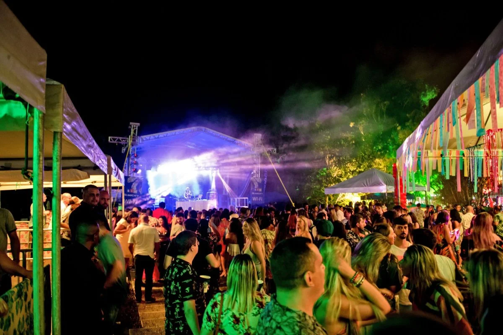

Nova Friburgo é conhecida por sua rica vida cultural, histórica e turística, oferecendo eventos que atraem moradores e visitantes durante todo o ano. Localizada na região serrana do estado do Rio de Janeiro, a cidade combina tradições herdadas dos colonizadores suíços, alemães e portugueses com manifestações culturais contemporâneas. Entre os eventos mais importantes está a Festa da Flor, que celebra a forte tradição da floricultura local com exposições, apresentações artísticas e atividades para toda a família. Outro destaque é a Fevest, evento que fortalece a posição de Nova Friburgo como um dos maiores polos de moda íntima do país, reunindo empresários, compradores e profissionais do setor. Durante o ano, a cidade também promove festivais gastronômicos, encontros de música, feiras de artesanato e eventos esportivos que aproveitam as paisagens montanhosas da região. No período natalino, as celebrações ganham iluminação especial, apresentações culturais e atrações para crianças, movimentando o comércio e o turismo. Além dos grandes eventos, bairros e distritos como Lumiar e São Pedro da Serra realizam festivais de música, arte e ecoturismo que valorizam a natureza e a cultura local. Esses acontecimentos contribuem para preservar as tradições da cidade, fortalecer a economia e proporcionar momentos de lazer e integração para a população. Assim, os eventos de Nova Friburgo desempenham um papel fundamental na identidade do município, destacando sua diversidade cultural, sua vocação turística e sua importância econômica para a região serrana fluminense.
